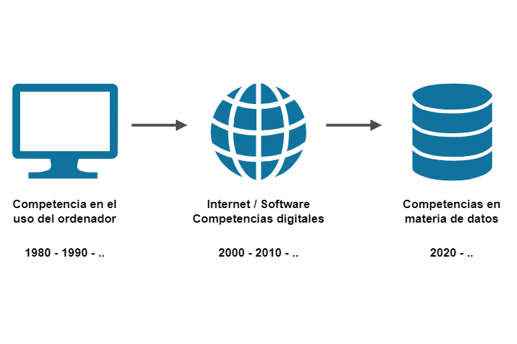
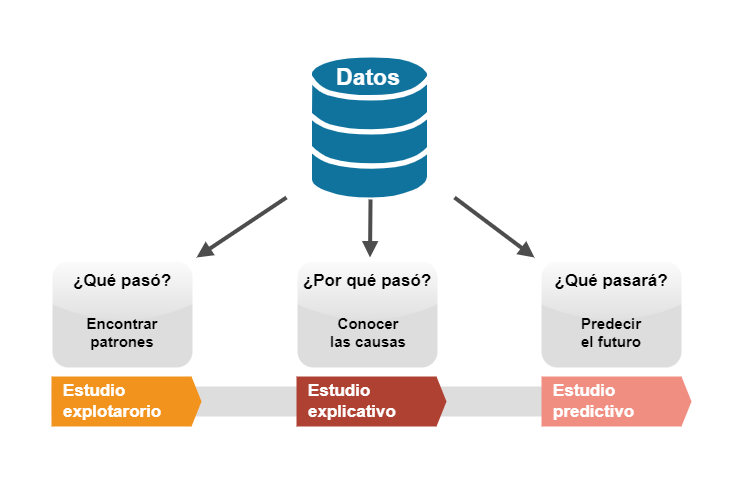
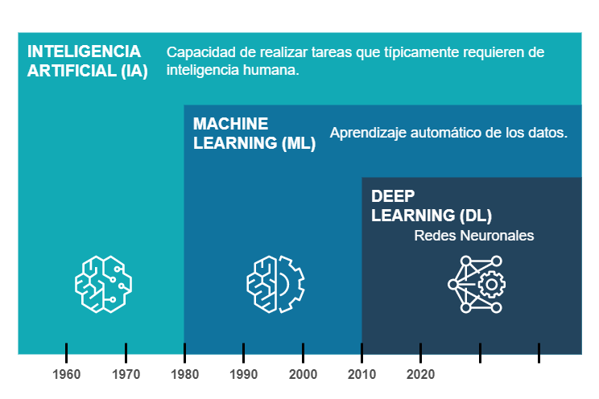

Toggle navigation sidebar
Toggle in-page Table of Contents
Data Projects
Data Projects
Contents
Personal projects
Median Ages
Water Supplies
Earth Quakes
Climate Change
Bar Reviews
Handfan Reviews
Traffic Fines
Urban Trees
Bread Prices
Ignatian Pilgrims
Challenge projects
Reducing hospital readmissions
Artículos
La importancia de adquirir competencias en materia de datos
La ciencia de convertir los datos en valor
¿Qué es la Inteligencia Artificial?
About
LinkedIn profile
DataCamp profile
.md
.pdf
Data Projects
Data Projects
#
By
Mikel Imaz
Personal projects
Median Ages
Water Supplies
Earth Quakes
Climate Change
Bar Reviews
Handfan Reviews
Traffic Fines
Urban Trees
Bread Prices
Ignatian Pilgrims
Challenge projects
Reducing hospital readmissions
Artículos
La importancia de adquirir competencias en datos

La ciencia de convertir los datos en valor

¿Qué es la Inteligencia Artificial?
